六种基本图表的特点和适用场合
“数据可视化”可以帮助用户理解数据，一直是热门方向。图表是“数据可视化”的常用手段，其中又以基本图表——柱状图、折线图、饼图等等最为常用。
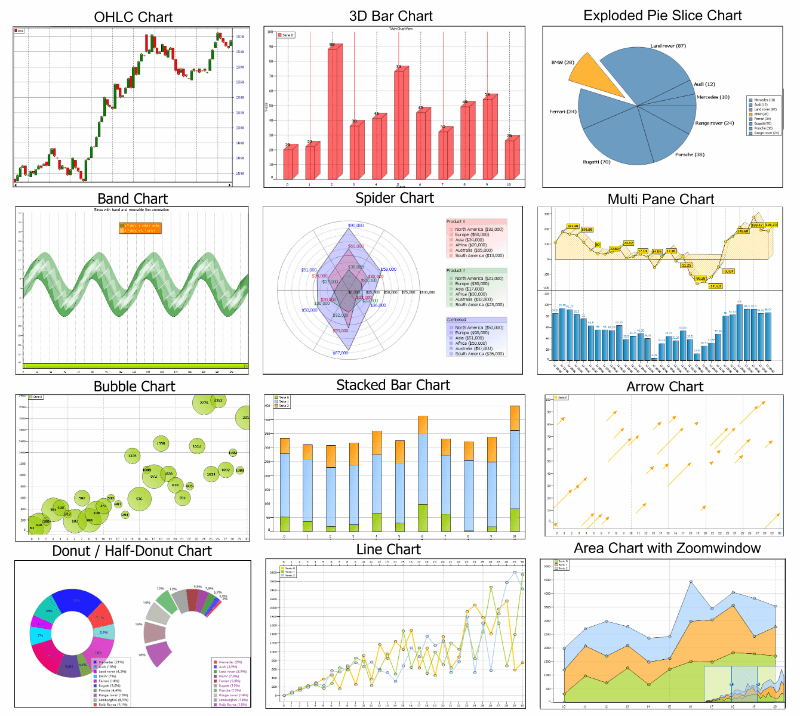
用户非常熟悉这些图表，但如果被问道，它们的特点是什么，最适用怎样的场合(数据集)?恐怕答得上来的人就不多了。
一、柱状图(Bar Chart)
柱状图是最常见的图表，也最容易解读。
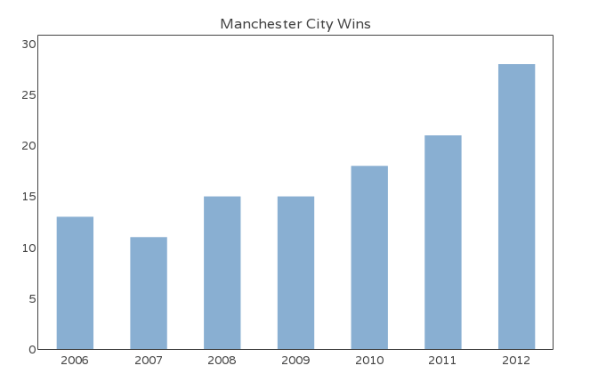
它的适用场合是二维数据集(每个数据点包括两个值x和y)，但只有一个维度需要比较。年销售额就是二维数据，”年份”和”销售额”就是它的两个维度，但只需要比较”销售额”这一个维度。
柱状图利用柱子的高度，反映数据的差异。肉眼对高度差异很敏感，辨识效果非常好。柱状图的局限在于只适用中小规模的数据集。
通常来说，柱状图的X轴是时间维，用户习惯性认为存在时间趋势。如果遇到X轴不是时间维的情况，建议用颜色区分每根柱子，改变用户对时间趋势的关注。
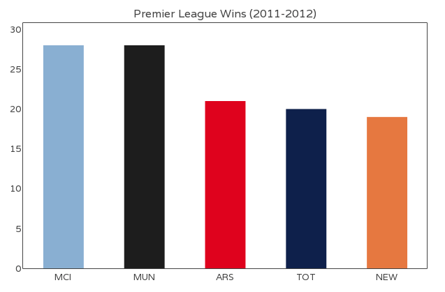
上图是英国足球联赛某个年度各队的赢球场数，X轴代表不同球队，Y轴代表赢球数。
二、折线图(Line Chart)数据
折线图适合二维的大数据集，尤其是那些趋势比单个数据点更重要的场合。
它还适合多个二维数据集的比较。
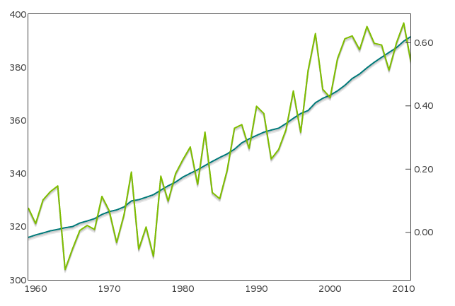
上图是两个二维数据集(大气中二氧化碳浓度，地表平均气温)的折线图。
三、饼图(Pie Chart)
饼图是一种应该避免使用的图表，因为肉眼对面积大小不敏感。
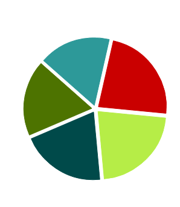
上图中，左侧饼图的五个色块的面积排序，不容易看出来。换成柱状图，就容易多了。

一般情况下，总是应该用柱状图替代饼图。但是有一个例外，就是反映某个部分占整体的比重，比如贫穷人口占总人口的百分比。
四、散点图(Scatter Chart)
散点图适用于三维数据集，但其中只有两维需要比较。
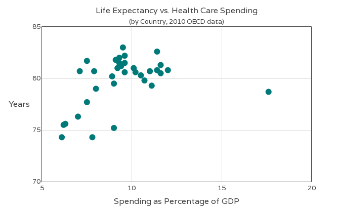
上图是各国的医疗支出与预期寿命，三个维度分别为国家、医疗支出、预期寿命，只有后两个维度需要比较。
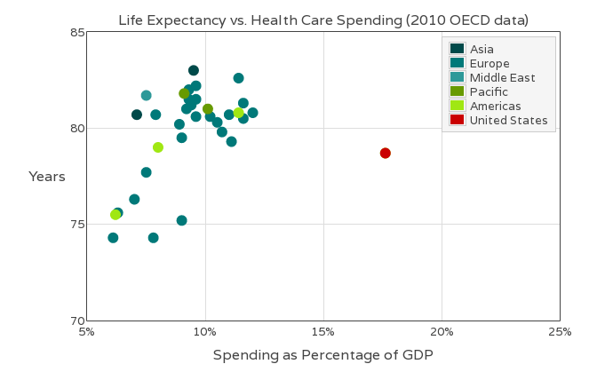
为了识别第三维，可以为每个点加上文字标示，或者不同颜色。
五、气泡图(Bubble Chart)
气泡图是散点图的一种变体，通过每个点的面积大小，反映第三维。
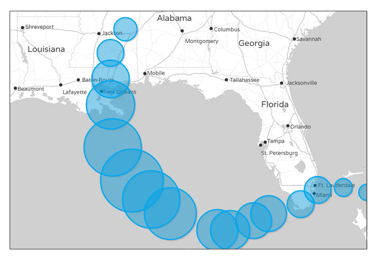
上图是卡特里娜飓风的路径，三个维度分别为经度、纬度、强度。点的面积越大，就代表强度越大。因为用户不善于判断面积大小，所以气泡图只适用不要求精确辨识第三维的场合。
如果为气泡加上不同颜色(或文字标签)，气泡图就可用来表达四维数据。比如下图就是通过颜色，表示每个点的风力等级。
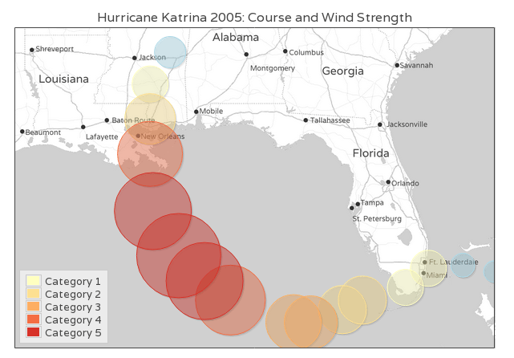
六、雷达图(Radar Chart)
雷达图适用于多维数据(四维以上)，且每个维度必须可以排序(国籍就不可以排序)。但是，它有一个局限，就是数据点最多6个，否则无法辨别，因此适用场合有限。
下面是迈阿密热火队首发的五名篮球选手的数据。除了姓名，每个数据点有五个维度，分别是得分、篮板、助攻、抢断、封盖。
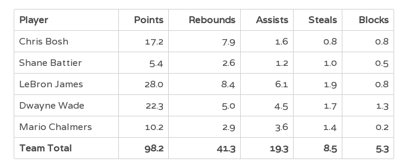
画成雷达图，就是下面这样。
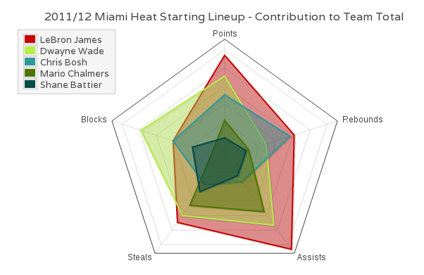
面积越大的数据点，就表示越重要。很显然，勒布朗·詹姆斯(红色区域)是热火队最重要的选手。
需要注意的时候，用户不熟悉雷达图，解读有困难。使用时尽量加上说明，减轻解读负担。